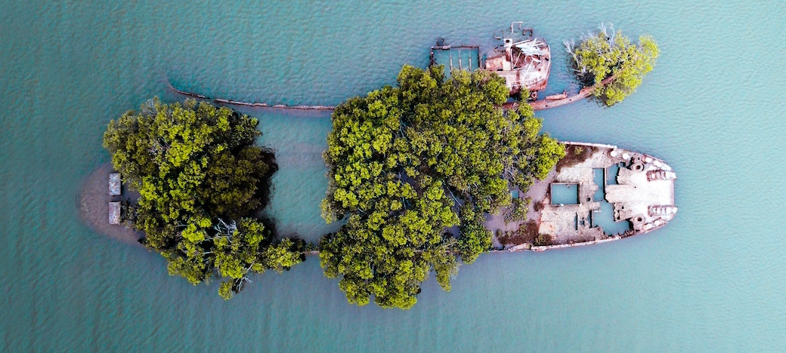

The travel app for pirates
← All Locations

When the fateful ship that makes up this tiny island sank, it brought a sizeable treasure with it. You'd be a fool to try to retrieve it, though. The water zombies will make short work of ye!